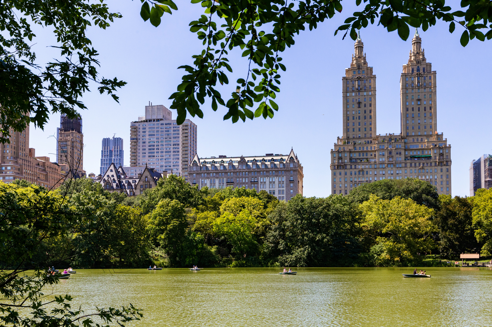
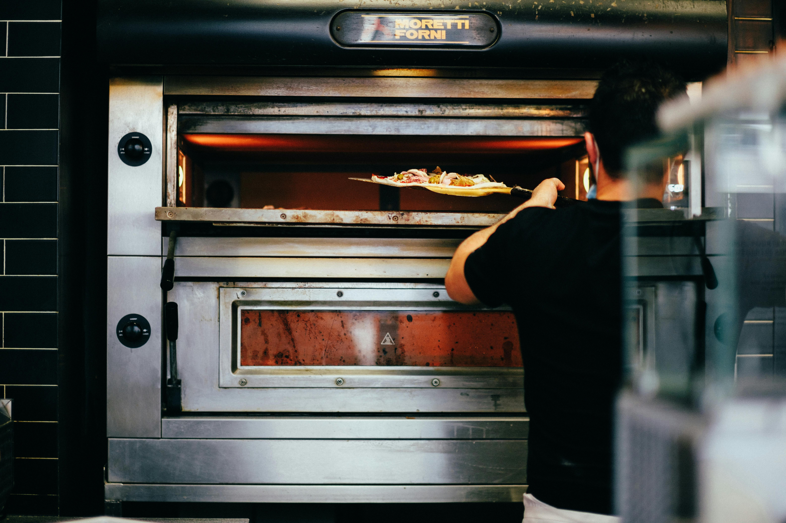
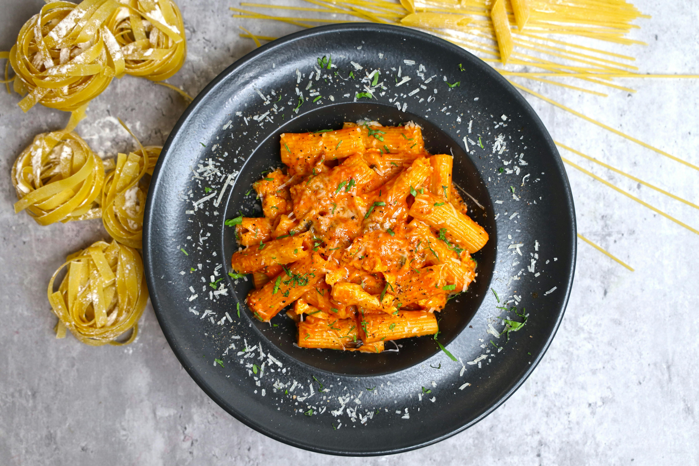

Why New York City?
New York City, the big apple.
New York City is one of the most iconic cities in the world, known for its cultural diversity, dense skyline and energy. Every district has its own personality from artsy streets of Brooklyn to fast-paced Manhattan. Time square is a landmark with a vibrant atmosphere, especially at night.
Visiting New York City offers a variety of experiences like biking through Central park, catching a broadway show, to crossing the Brooklyn bridge. Always prepare to walk more than 15,000 steps in a day, but with a full belly of great eats.
Restaurants
My favorite eats in NYC

L'industrie Pizza
Pizzeria that is highly loved with a known classic New York style pizza.
Address:
104 Christopher St, New York, NY 10014
What I like about it:
This pizza always keeps me coming back for more. The slice is thin and crispy with various topping options including burrata, fig jam, bacon and other great options.

Mikado Sushi
Popular NYC chain known for its accesible, fresh and generously portioned sushi.
Address:
109 W 14th St, New York, NY 10011
What I like about it:
Enjoyed attending happy hour from 3:30pm to 6:30pm for its fresh sushi bites and cocktails. Variety of options in the menu that are beautifully prepared and flavorful.

Oregano
Family-owned Italian restaurant in Williamsburg, Brooklyn, known for its wood-fired pizza and handmade pasta.
Address:
102 Berry St, Brooklyn, NY 11211
What I like about it:
Enjoy how fresh and flavorful the pasta is along with the fresh bread. Generous portions that have me wanting to come back for more.